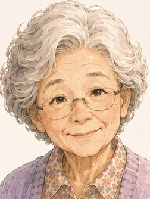
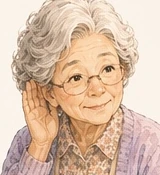
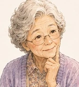
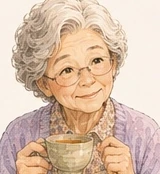
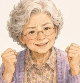

まほろばあちゃんと、
土地探しの道案内。
迷う時間も、きっと意味がある。全部いっぺんに見なくて大丈夫。今のあなたに必要そうな情報を、まず2つだけ一緒に探します。
「答えを決める」より、「次に確かめること」を見つけましょう。
1ようこそ
2質問
3おすすめ
4ふりかえり
まほろばあちゃん
おや、土地探しかい？情報はたくさんあるけれど、全部見なくていいんだよ。今のあんたに必要そうなものから、少しずつ見ていこうかね。
はじめの一歩を、やさしく整理します。
3つだけ聞きます。名前や住所などの個人情報は入力しません。回答はこの画面内で処理され、送信・保存しません。
自分で道具箱を全部見る →
まほろばあちゃん
まずはこれだけ。いま一番、気になっていることはどれ？「まだよく分からない」でも大丈夫だよ。

まほろばあちゃん
なるほどねぇ。じゃあもうひとつ。今は、土地探しのどのあたり？

まほろばあちゃん
最後にひとつだけ。探しているエリアはどのあたり？
※ Pilotでは大まかなエリアだけ使います。住所や現在地は取得しません。
NOW / NEXT
今のあなたなら、まずこの2つ。
正解を決めるためではなく、「次に確かめると判断が一歩進みそうなもの」を選んでいます。合わなければ、あとで変えて大丈夫です。

まほろばあちゃん
見てみて、何か変わったかい？少し安心したでも、新しい疑問が出たでも大丈夫。答えが出なくても、前に進んどるよ。
まほろばあちゃん
よし、今日はここまででも十分。調べたことより、「自分は何が気になっているか」が少し見えたなら、それがいちばんの収穫だよ。
今日の道しるべ
LINEで続きを一緒に考える
このPilotは土地購入の意思決定を支援するための案内です。表示する情報は判断材料の入口であり、購入判断・建築可否・税務・融資等の最終確認は、行政・建築士・税理士・金融機関・不動産会社などの専門家に確認してください。